İyiki doğdunm kır çiceğim, biliyorum uzun zaman oldu.
Zaman bizden bir şeyler aldı; belki kızgınsın, belki kırgın, belki yorgun ama bil ki bende senin gibiyim sevgilim.
Yüreğimde filizlenen o kır çiçeği solgun ama hala umut dolu.
Birlikte geçtiğimiz yolları, seninle birlikte olduğum her anı, zamanı düşünüyorum.
Zaman her ne kadar uzaklaştırsa da hissettiğim sevgi asla eksilmiyor.
Sana tüm kalbimle merhaba demek istiyorum, tıpkı ilk günkü gibi.
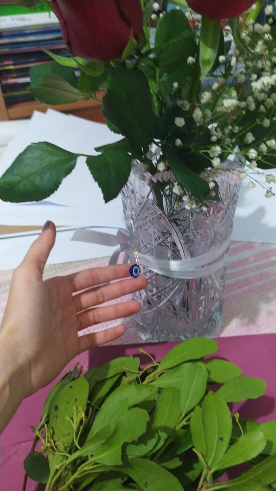
Sensiz 8 mevsim geçirdim şimdi,
Hâlâ geçmedi boynumdan ellerinin izleri,
Belki kızıyorsun bana ama
Benim için bazı hayaller hâlâ hak ediyor gerçekleşmeyi
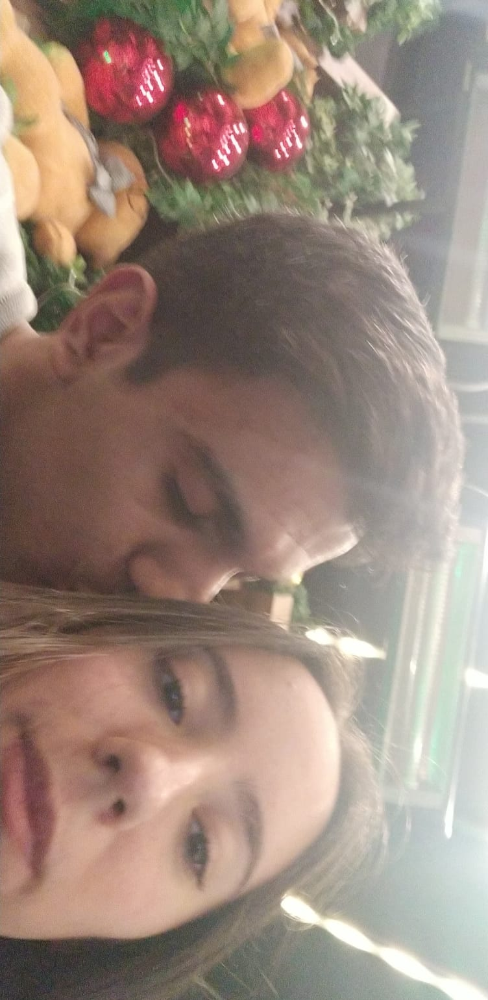
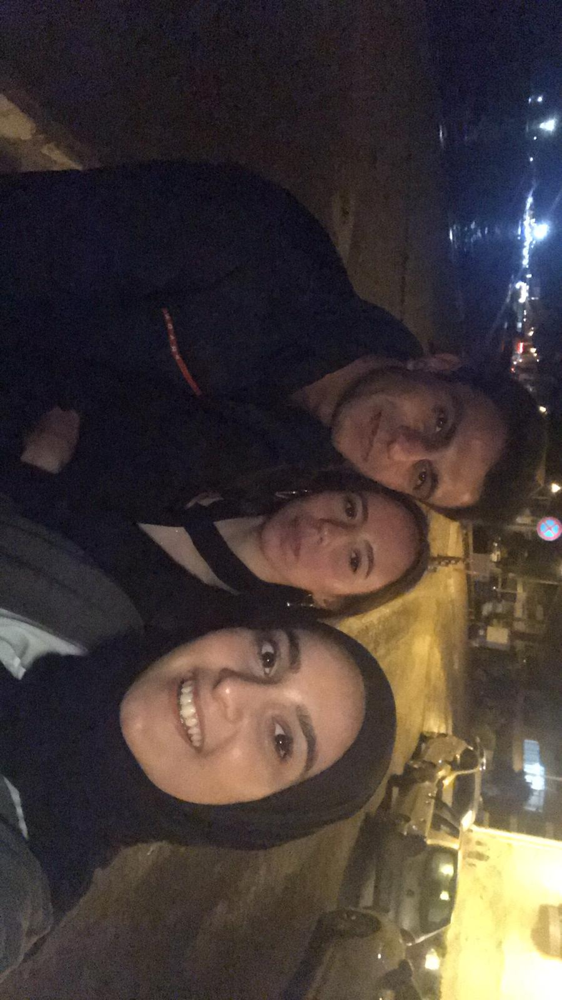
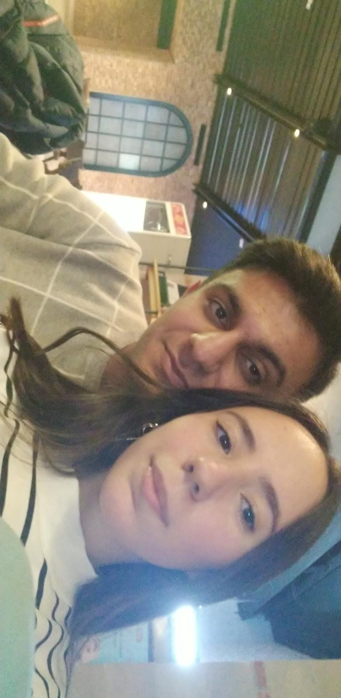
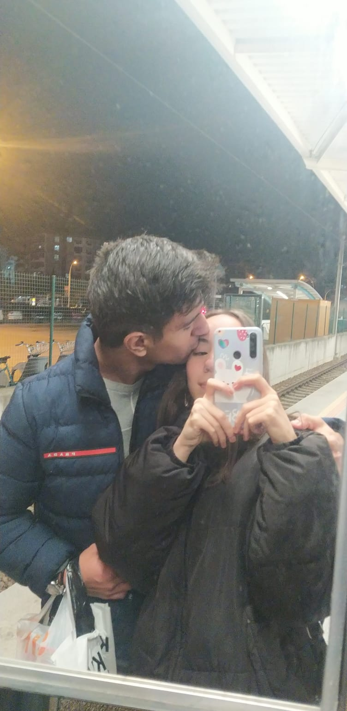
Bana, "Ruhundaki çoçuğu hiçbir zaman kaybetme olur mu?" demiştin.
Ruhumdaki çocuk salıncaktan düştü, dizleri kanadı.
Bir daha oynamayacağım deyip oyuna küstü Berre.
Sanırım yardımına ihtiyacı var.
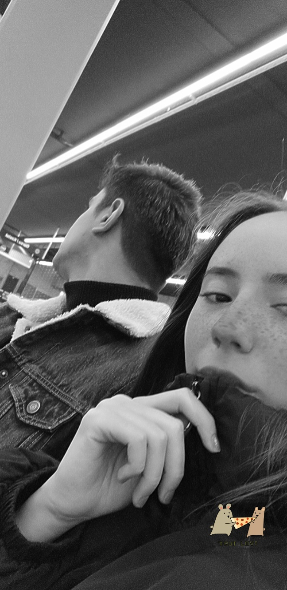
Artık üzmeyelim birbirimizi, ayrı kalmayalım özenle birbirimizden.
Sen çivisi çıkmış bu dünyada duvarıma astığım en güzel tablomsun kır çiçeğim.
İnsan ait olduğu yeri bulunca fırtına diniyor, savaş bitiyor Berrem. Bir bahar başlıyor sonra.
Çünkü sen aklıma gelince her şey gülümsüyor bana, ağaçlar şarkı söylüyor, rüzgar çok tatlı esiyor.
Seni seviyorum, ilk heyecanla, ilk günkü kadar çokça.
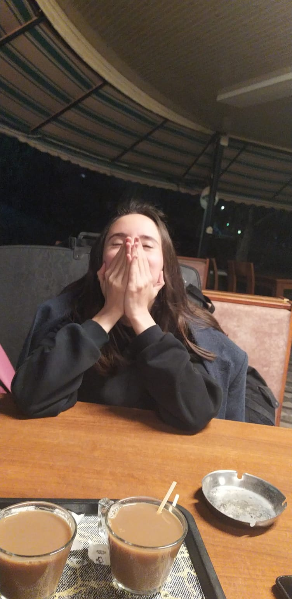
Artık üzmeyelim birbirimizi, ayrı kalmayalım özenle birbirimizden.
Sen çivisi çıkmış bu dünyada duvarıma astığım en güzel tablomsun kır çiçeğim.
İnsan ait olduğu yeri bulunca fırtına diniyor, savaş bitiyor Berrem. Bir bahar başlıyor sonra.
Çünkü sen aklıma gelince her şey gülümsüyor bana, ağaçlar şarkı söylüyor, rüzgar çok tatlı esiyor.
Seni seviyorum, ilk heyecanla, ilk günkü kadar çokça.
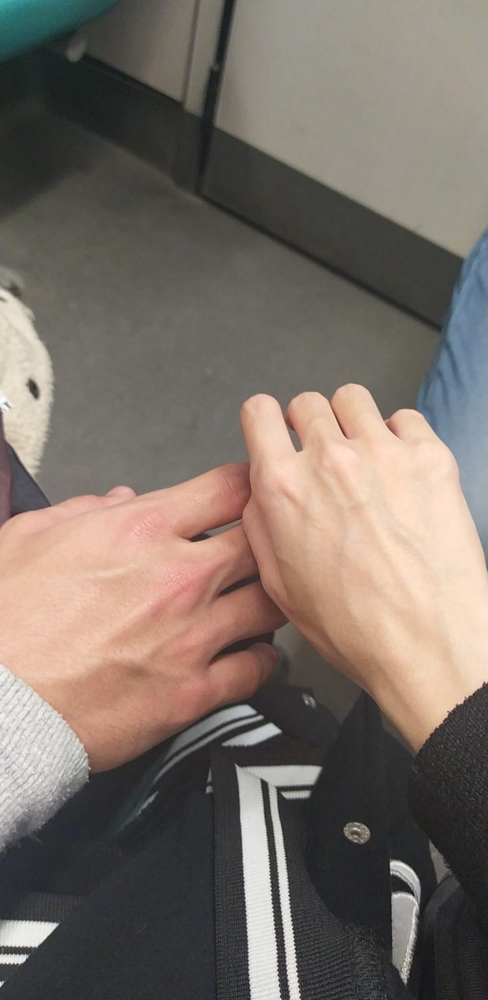
Sevgilerimizi yarınlara bırakmayalım artık, çekingen ve tutuk şekilde. Kalbimizi dolduran duygular kalbimizde kalmasın.
Geniş zamanlar umut ederken dar vakitlere kalmayalım Berrem.
Bir ateş yakacaksa beni kalbimden, senin aşkının ateşi yaksın beni.
Özlemim sen olacaksan yansın yüreğim, sen olmayan gurbeti istemem ben, koru istemem.
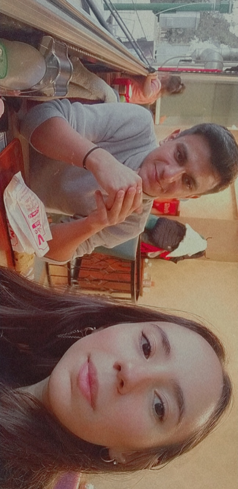
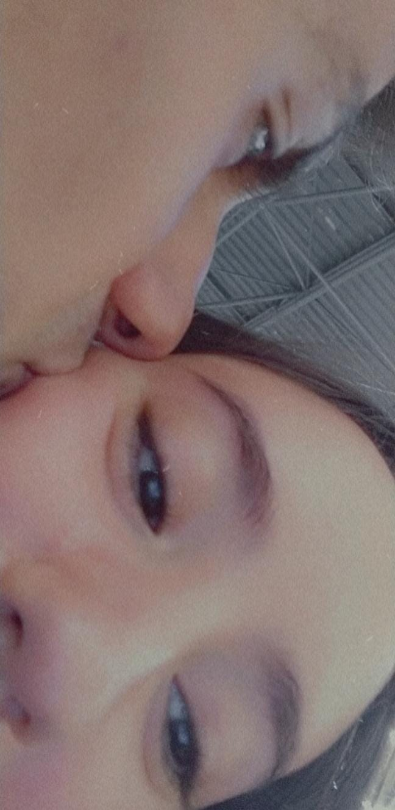
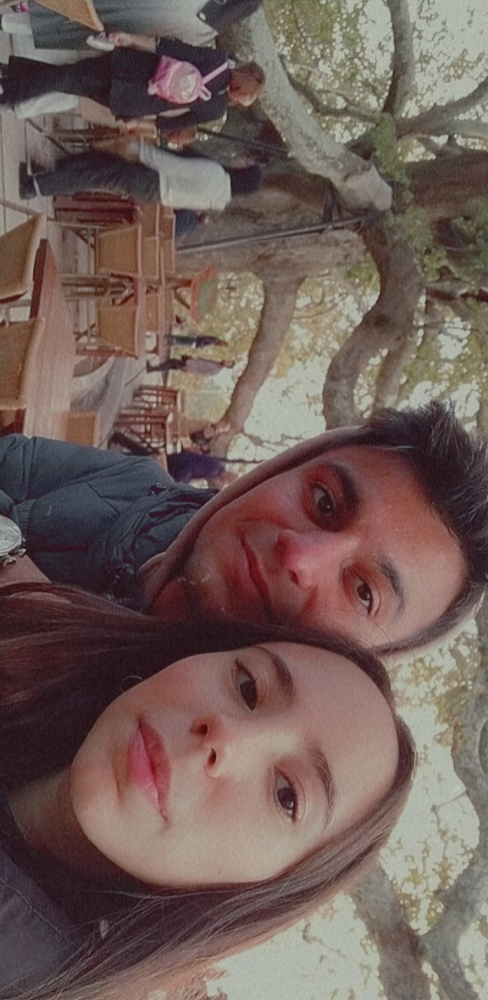
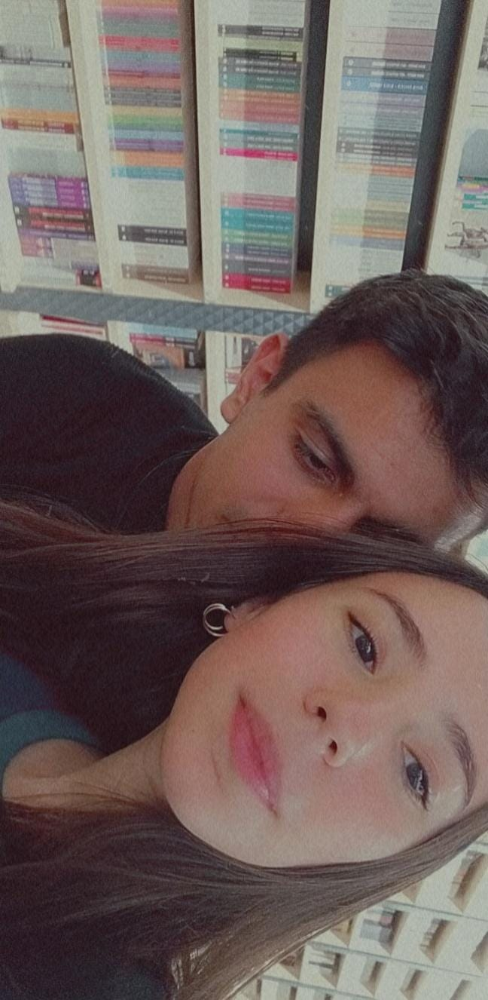
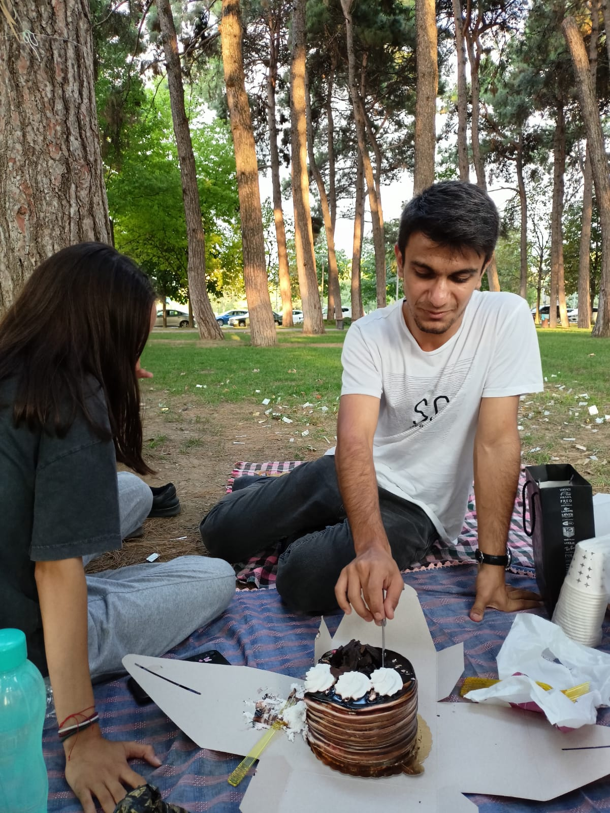
Bursa'da bazen işim düşüyor üniversite civarına.
Uludağ'da, senle aynı üniversitede okuyanlara gözüm çarpıyor.
Düşünüyorum sonra ne kadar aciz olduklarını. Kimisi; senle aynı havayı soluyor, seninle aynı sıralara oturabiliyor, seninle aynı trene binebiliyor.
Seninle muhabbet edebilen, gülümsemene şahit olabilen çok şanslılar da var hatta.
Hepsi o kadar aciz ki ne kadar şanslı olduklarının farkında bile değiller.
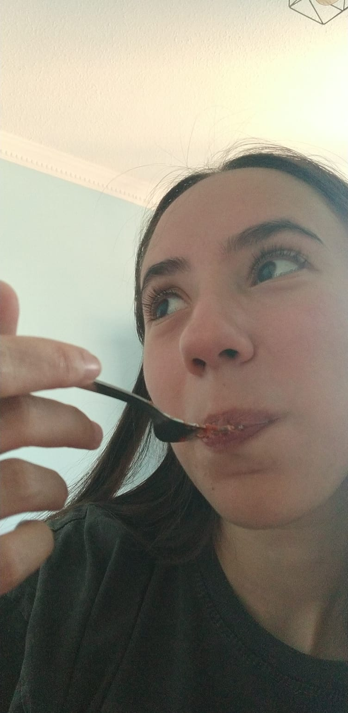
Geçmişe dönüp baktığımda; utanıyorum, sıkılıyorum, ağlıyorum da bazı bazı.
Kendimi üzüntüden harap ettiğimde oluyor. Neden diyorum, neden elimden daha fazlası gelmedi ki...
Ben; bütün kalp kırıklarım, bütün pişmanlıklarım, bütün hayıflanmalarım adına bütün özlemimle, bütün sevgimle, bütün kalbimle kendimi yine sende buluyorum Berre.
Sen, hayatımda hatırı sayılır yegane konusun.
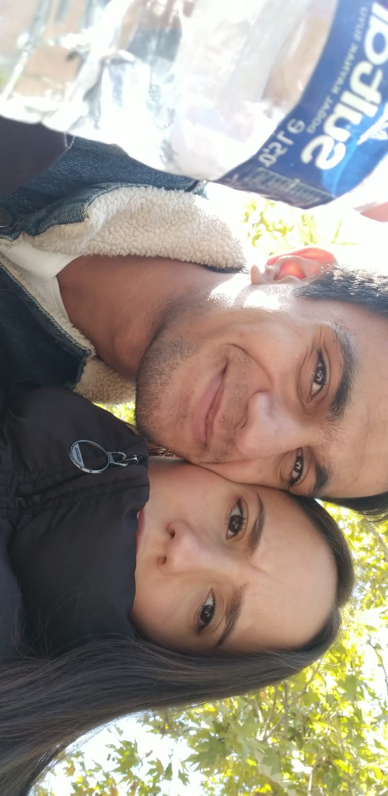
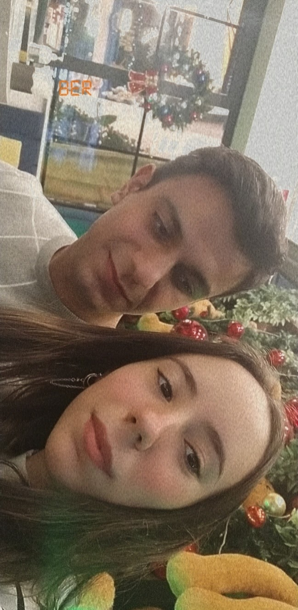
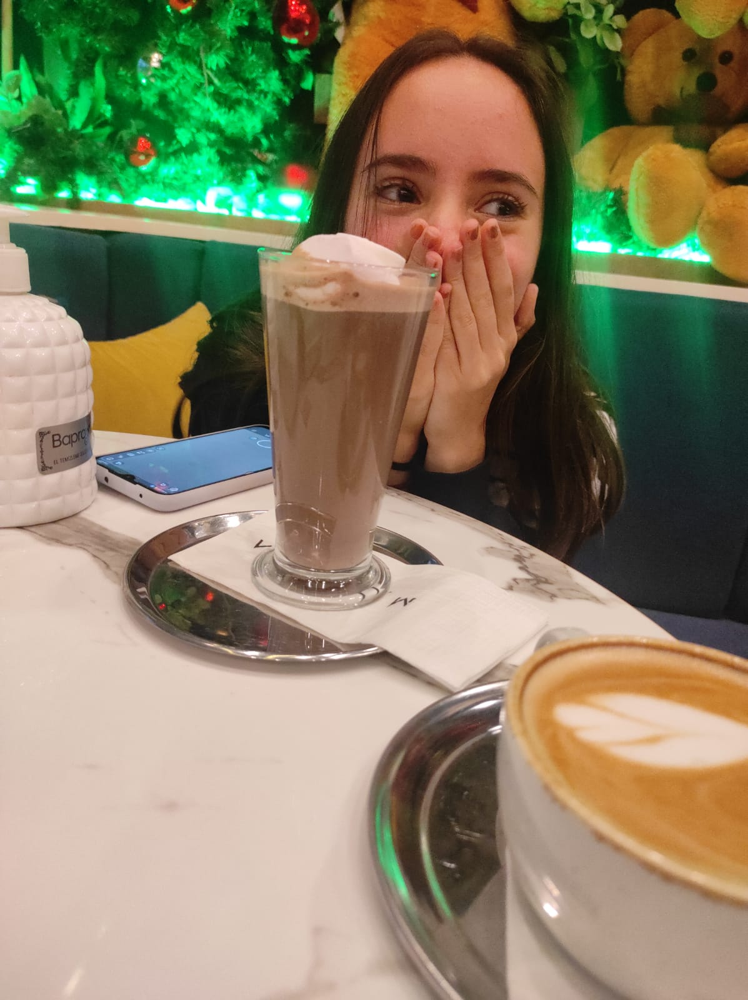
İnan hiç suçlu değiliz ikimiz de.
O kadar masum, o kadar saf ve durusun ki senin bir şeyde suçlu olmanın evrende mümkünatı yoktur.
Benim varsa suçum, günahım; inan bana acısını her gün yokluğunla ödüyorum.